当前主报告 / V5 Beta · 负责人原稿
先见一步，
从空间先验到行动。
11 页报告，说明 Lux3D 三维先验怎样进入局部空间建模、观测核对和物理预演，以及轮腿探索的结果与边界。
报告原件按原字节保留。当前试玩的初判后自主选择与最新原片，另见当前交付说明。
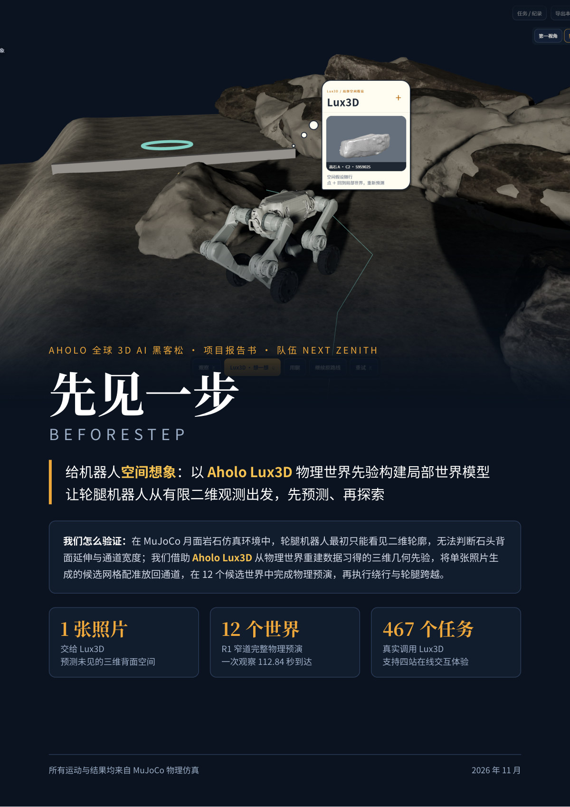
先见一步 · 项目报告书 V5 Beta1 / 11
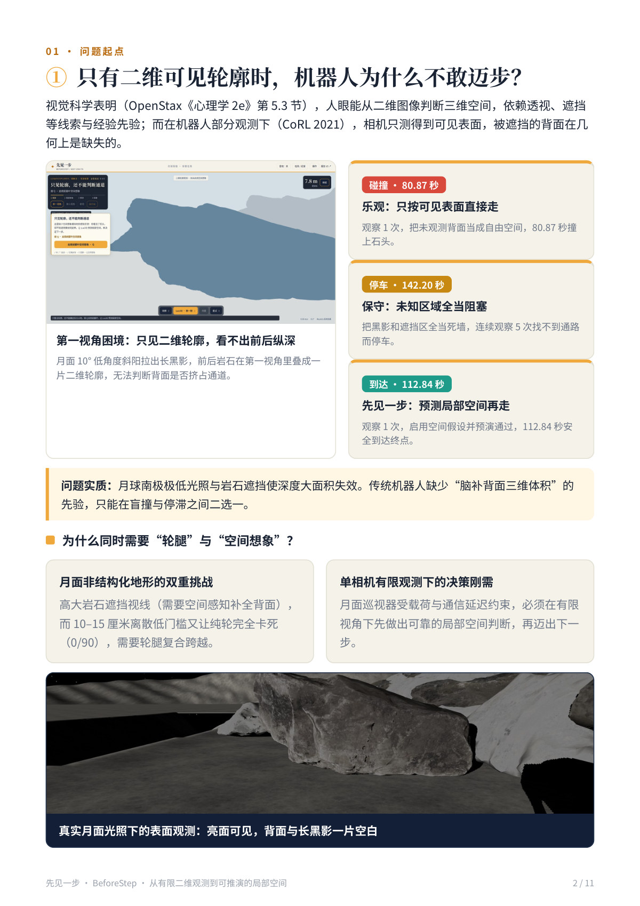
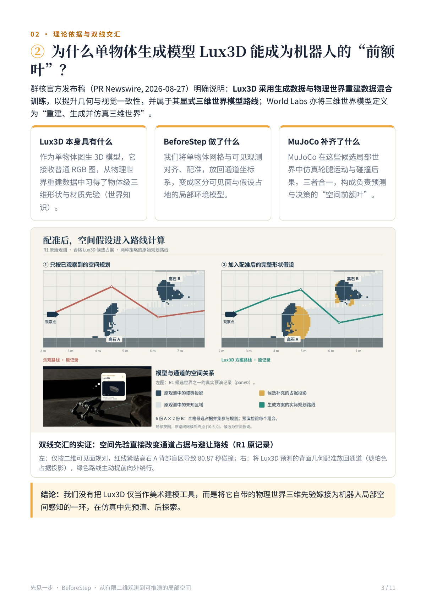
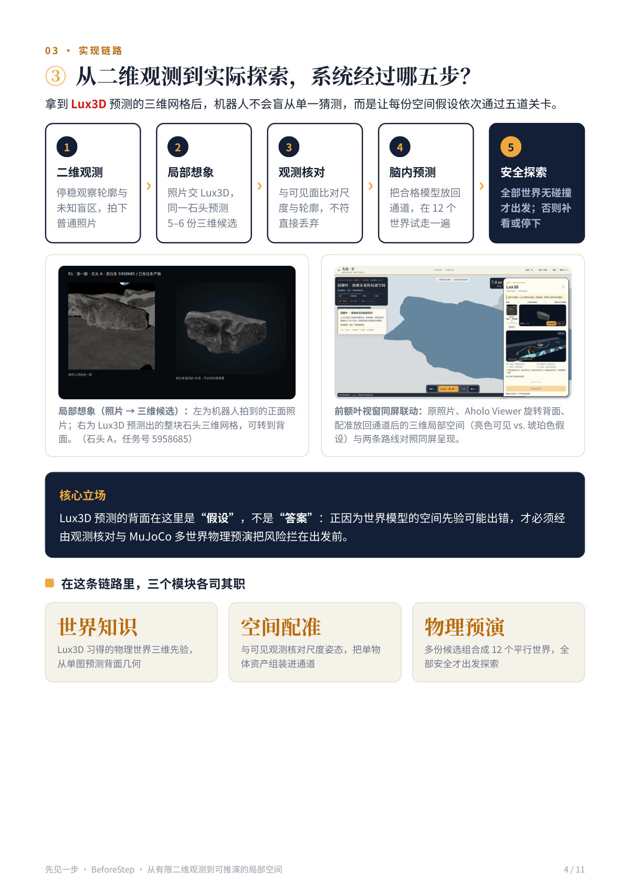
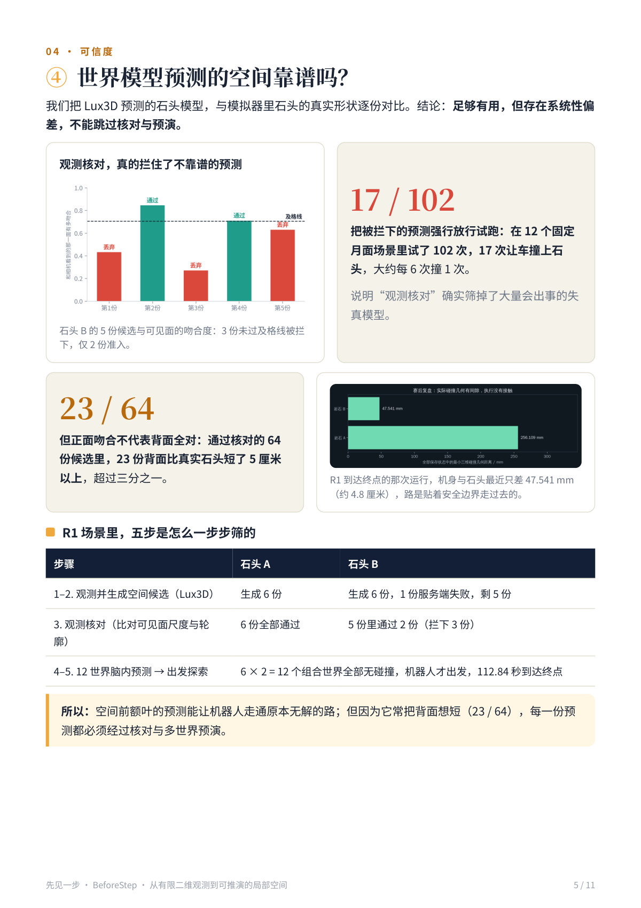
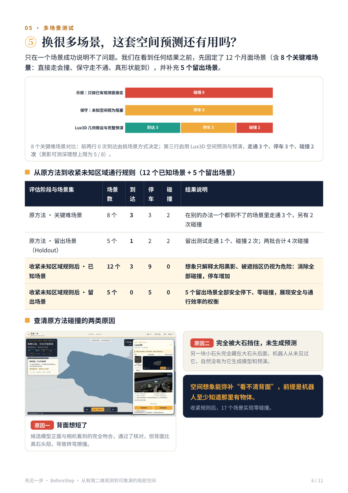
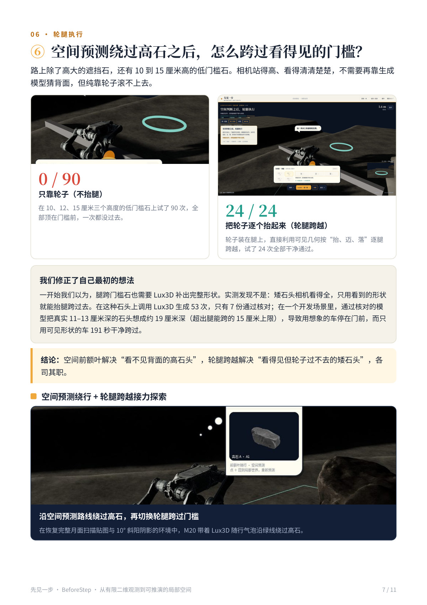
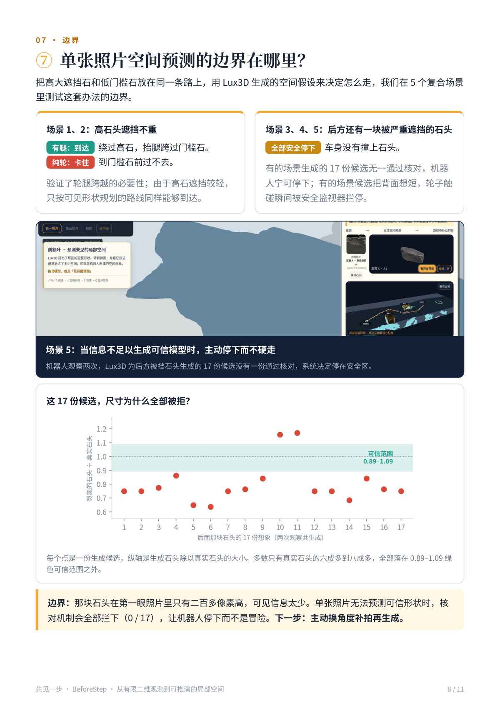
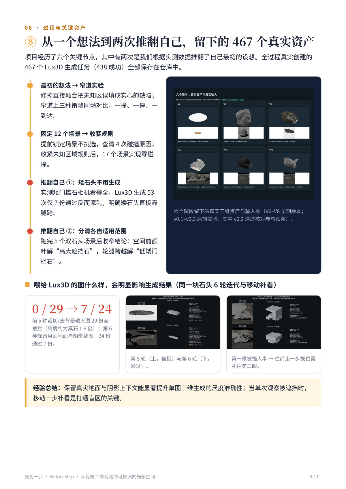
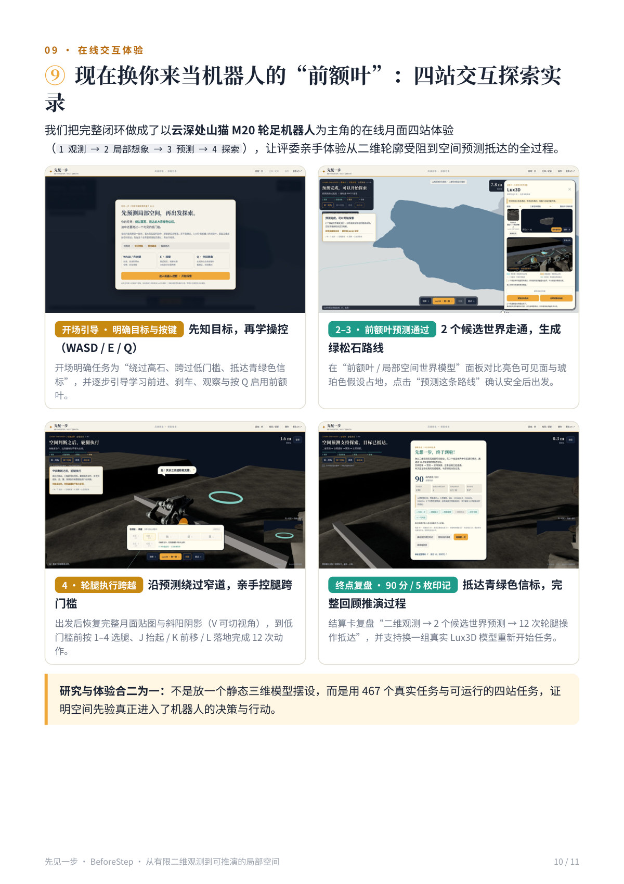
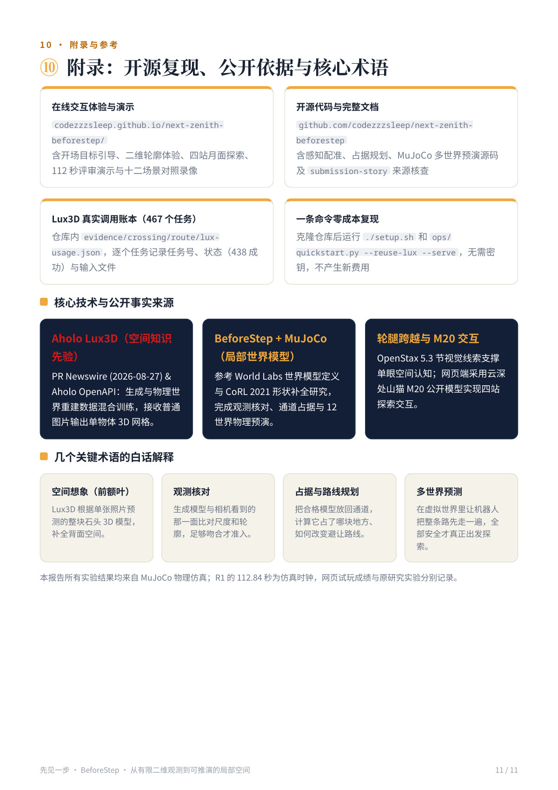
读完之后，继续复查
当前试玩、原片，
以及每一步的来源。
报告、原研究和当前交互版本分别保留身份，来源与边界可对照查阅。
当前试玩与连续 1080p 原片
亲自操作月面任务 · 下载连续母片、清晰补拍与五图 · 当前操作说明
初判后可自选手控、想象、补看或停车；辅助路线须通过所选世界的真实预演。原片是导演剪辑素材，最终112秒成片另行制作。
报告原件、历史版本与研究来源
V5 Beta 原文件与逐页 SHA · 报告版本索引 · V3 原 PDF · 旧 V5 原 PDF · V4 历史 PDF